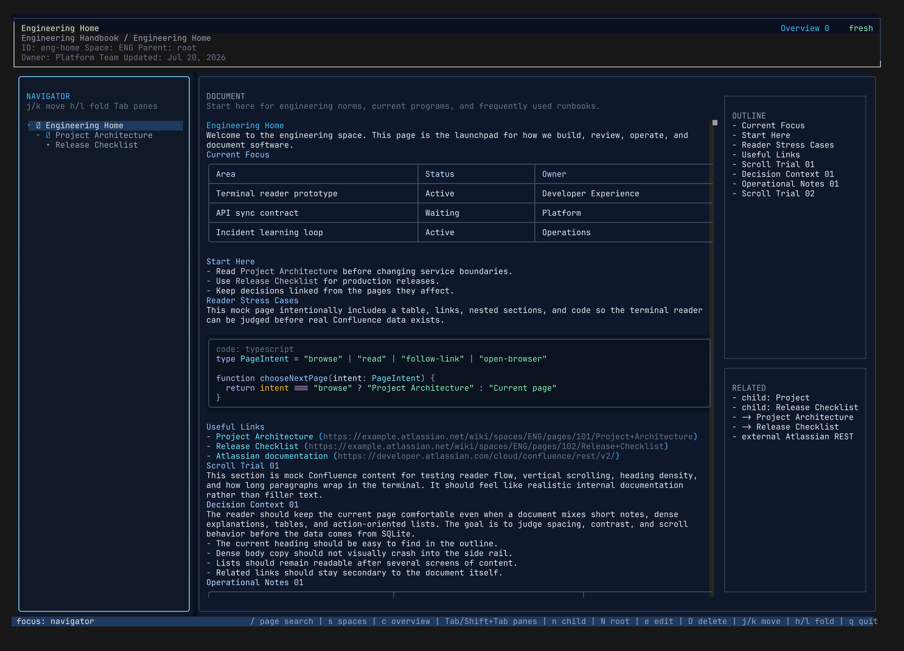

Local-first after sync
Remote Confluence requests happen only when you explicitly sync or reload a page. Normal reading uses your local SQLite index.
Terminal-first Confluence reader
Sync the spaces you care about, search them with focused keyboard workflows, preview cached PNG, JPEG, and SVG attachments, and keep readable fallbacks everywhere else.
npm install -g @bojackduy/lazyconfluence

Why it exists
Confluence is useful, but jumping between browser tabs breaks terminal flow. lazyconfluence keeps the read path local-first after sync, so browsing a page tree, scanning content, and searching docs feels fast and keyboard-native.
Features
Remote Confluence requests happen only when you explicitly sync or reload a page. Normal reading uses your local SQLite index.
Move through an ordered page tree, outlines, related links, and browser-like local history. Switch spaces without losing keyboard flow.
Cached PNG and JPEG attachments render locally. SVGs are safely rasterized during sync or reload, with Chromium preferred for browser-compatible diagrams and resvg as a fallback.
Search the active space, all synced spaces, or text in the current document. Inspect child pages, outgoing links, backlinks, and page outlines from the same interface.
Edit locally, create child or root pages, stage deletes, review the current-space diff, and make remote write-back an explicit approval step.
Use native viewers in Kitty, Ghostty, WezTerm, iTerm2, and Sixel-capable terminals, or fall back to readable color-cell previews and labeled placeholders.
Quick start
curl -fsSL https://bun.sh/install | bash
npm install -g @bojackduy/lazyconfluence
lazyconfluence init
lazyconfluence sync
lazyconfluence
Privacy model
Your Atlassian token is stored in your local user config directory. Synced content stays in your local index, and the TUI reads that index instead of calling Confluence while you browse.